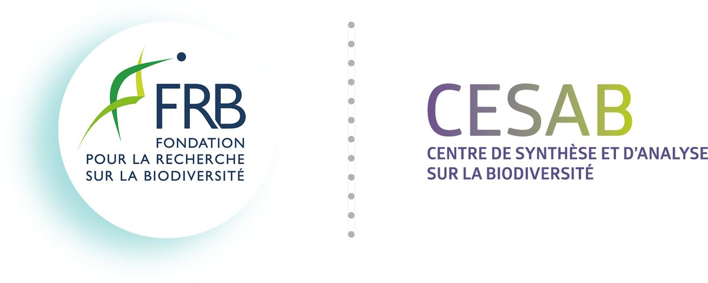
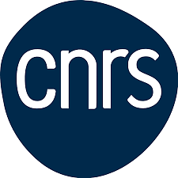
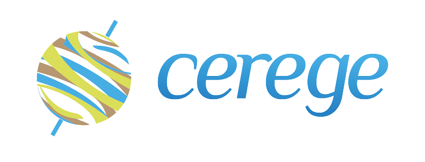

DYNAMITE
Dynamics of Aragonite Shell Production and Export in the Global Ocean

Planktonic organisms that secrete calcium carbonate (CaCO₃) shells play a pivotal role in the ocean's capacity to absorb atmospheric CO₂. Aragonite, one of the primary mineral forms of CaCO₃, is produced by pelagic snails such as pteropods, heteropods, and janthinids. Despite their significance, the global dynamics of aragonite production and export remain poorly quantified, with existing estimates of its contribution to marine CaCO₃ production ranging widely from 1% to 98%. Additionally, the spatial distribution of aragonite production is largely unknown.
Objectives
DYNAMITE aims to elucidate the production and export dynamics of aragonite shells in the world's oceans by:
- Quantifying the global contribution of aragonite to marine calcium carbonate production.
- Mapping the spatial distribution of aragonite-producing organisms.
- Understanding the temporal trends in aragonite shell production and export over recent decades.
Approach
To achieve these objectives, DYNAMITE brings together an international consortium of experts in taxonomy, ecology, marine biogeochemistry, and carbonate chemistry to:
- Data Compilation: Synthesize and harmonize existing datasets on aragonite-producing plankton, including historical and contemporary records.
- Database Development: Create a comprehensive, open-access database detailing the production and export rates of aragonite shells globally.
- Modeling and Analysis: Employ biogeochemical models to simulate aragonite dynamics and assess their implications for the oceanic carbon cycle.
Expected Impact
By providing a clearer understanding of aragonite shell production and export, DYNAMITE will:
- Enhance predictions of the ocean's role in carbon sequestration.
- Inform climate models and global carbon budget assessments.
- Support conservation strategies for vulnerable planktonic species affected by ocean acidification.
DYNAMITE was selected through the 2023 CESAB Datashare call for proposals, following evaluation by an independent panel of experts.
Funded and hosted by

